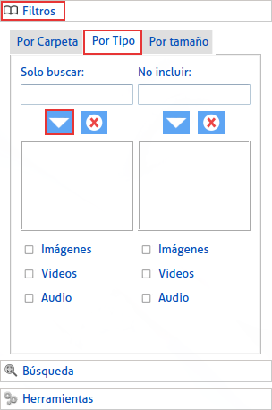

|
Se encuentra en el menú a la izquierda, en la opción "filtros", escogemos "Por Tipo", encontraremos dos columnas: |
|
En la primera columna especificamos que deseamos buscar solo los tipos de archivos que escojamos, debemos escribir la extención del archivo dentro del cuadro de texto, y escoger el deseado. |

|
|
Luego de escogerlo damos click en la flecha que se encuentra debajo, así podremos seguir escogiendo cuantos deseemos. |
|  |
|
Si nos equivocamos en la elección, podemos limpiar la selección en el botón que se encuentra debajo con el símbolo de una "X". |
|
La columna de la derecha, funciona de manera contraria, los tipos de archivos que escojamos , no se van a incluir en la búsqueda. |
|
En la parte inferior se encontrará tambien con dos columnas pero con las opciones cada una de marcar (Imágenes, Videos o Audio) |
|
Si marca alguna de estas opciones significará que incluye buscar o excluir todas las extenciones de (Imágenes, Videos o Audio) respectivamente. |